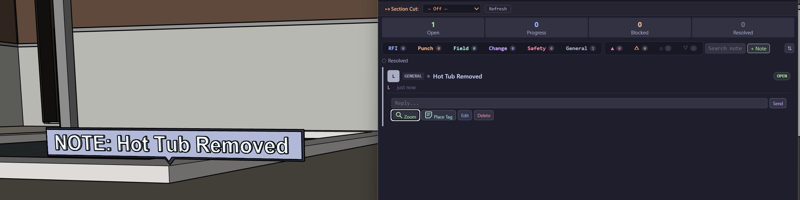
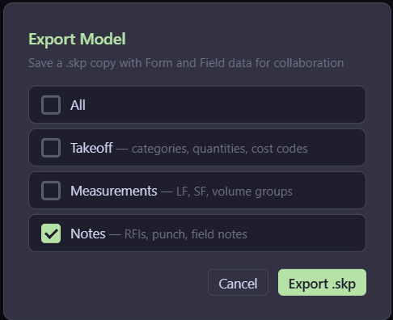

Feature guide
Project Notes
Pin notes to your model, track issues by type and urgency, and share annotated models with your team.
Basics
Creating a note
Open the Notes tab in the Takeoff Report and click + Note. Fill in a title, optional body text, and choose a type and urgency level. You can also link the note to a selected entity in the model — the note will then be anchored to that object.
Notes appear as cards in the Notes tab and as visual tags in the 3D model so anyone opening the file can see them in context.

Types
Six note types
RFI
Request for information — questions that need an answer before work continues
Punch
Punch list items — work that needs to be completed or corrected
Field
Field notes — observations and on-site documentation
Change
Change orders — scope modifications that affect the takeoff
Safety
Safety concerns — hazards or compliance issues to flag
General
General notes — anything that doesn't fit the other types
Tracking
Urgency & status
Each note has an urgency level and a status. Use the urgency chips to filter the list and the status to track progress.
Urgency
Critical— needs immediate attention
High— important, address soon
Normal— standard priority
Low— when you get to it
Status
Open— not started
In Progress— being worked on
Blocked— waiting on something
Resolved— complete (hidden by default)
Actions
What you can do with a note
Zoom
Zoom the camera to the linked entity in the model so you can see exactly what the note is about.
Place Tag
Creates a visible text tag in the 3D model at the linked entity's location so anyone opening the file sees it.
Reply
Add a threaded reply to the note. Replies are saved with the model so your team can have a conversation in context.
Edit / Delete
Edit the title, body, type, or urgency of an existing note. Or delete it entirely.
Collaboration
Sharing notes
Notes are stored inside the SketchUp model. To share them with your team, use Export Model from the FF menu. You can choose to export just notes, or include takeoff data and measurements too.
When a teammate opens the exported .skp file with Form and Field installed, they'll see all notes in the Notes tab and any placed tags in the 3D view. They can reply, update status, and export again — no spreadsheet telephone.

That's it. Create notes with + Note, pick a type and urgency, link to an entity, place a 3D tag, and export the model to share. Everyone sees the same annotated data.
Up next →
CAD Overlays & Gridlines
Import CAD sheets and overlay gridlines on your model.